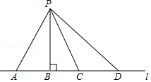
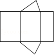
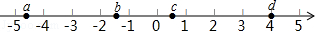
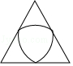
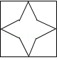
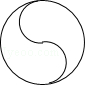
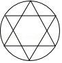

2017年北京市中考数学试题 · 选择题 第1、2、3、4、5题
1．（3分）如图所示，点P到直线l的距离是（ ）

A．线段PA的长度B．线段PB的长度C．线段PC的长度D．线段PD的长度
2．（3分）若代数式
有意义，则实数x的取值范围是（ ）
A．x=0B．x=4C．x≠0D．x≠4
3．（3分）如图是某个几何题的展开图，该几何体是（ ）

A．三棱柱B．圆锥C．四棱柱D．圆柱
4．（3分）实数a，b，c，d在数轴上的对应点的位置如图所示，则正确的结论是（ ）

A．a＞﹣4B．bd＞0C．|a|＞|b|D．b+c＞0
5．（3分）下列图形中，是轴对称图形但不是中心对称图形的是（ ）
A．

B．
C．
D．